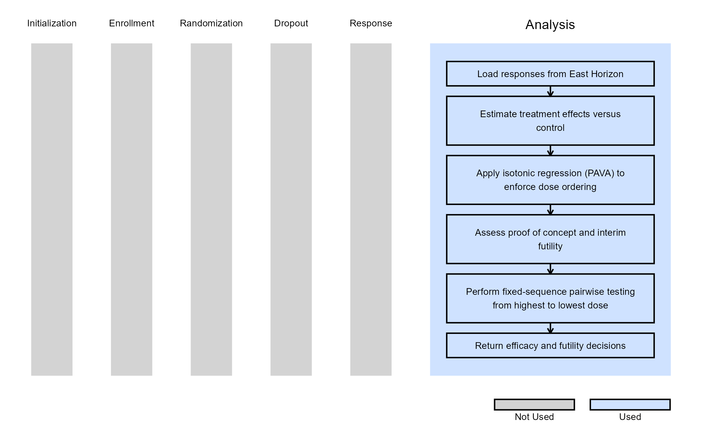

Dose Finding, Analysis
Sayantan Biswas, Pradip Maske, Gabriel Potvin
August 12, 2026
Source:vignettes/DoseFindingAnalysis.Rmd
DoseFindingAnalysis.RmdOpening this example
To inspect the example in the active supported IDE, run:
CyneRgy::RunExample( "DoseFindingAnalysis" )With an installed package, this creates or reuses a writable copy
under ~/CyneRgyExamples; files in the R package library are
not opened. With a development checkout loaded by
pkgload::load_all(), the repository example is opened
directly.
To choose another copy location, provide an existing destination directory:
CyneRgy::RunExample( "DoseFindingAnalysis", strDirectory = getwd() )RunExample() opens
DoseFindingAnalysis.Rproj in RStudio. In VS Code it opens
the example folder, Description.Rmd, and every R script
under R/. The R scripts do not require an RStudio
project.
This example is related to the Integration Point: Analysis. Click the link for setup instructions, variable details, and additional information about this integration point.
- Study objective: Dose Finding
- Number of endpoints: Single Endpoint
- Endpoint type: Continuous
- Task: Explore
Introduction
The following examples illustrate how to integrate new analysis capabilities into East Horizon using R functions in the context of a dose finding clinical trial with a continuous endpoint.
In the R directory of this example you will find the following R file:
- AnalyzeDoseFindingContinuousUsingPairwiseTTest.R - Performs fixed-sequence pairwise comparisons between treatment doses and control using t-tests. Supports interim futility assessment, isotonic dose-response estimation, and proof-of-concept evaluation.
Example 1 - Fixed Sequence Pairwise Testing with Isotonic Dose-Response Estimation (Continuous Outcome)
This example is related to this R file: AnalyzeDoseFindingContinuousUsingPairwiseTTest.R
This example demonstrates a dose-finding analysis for continuous endpoints using a Fixed Sequence Pairwise testing procedure, including the evaluation of Proof of Concept (PoC), futility, and efficacy decisions. Efficacy is assessed only at the final analysis using pairwise comparisons between each active treatment dose and the control group. Depending on the study design, either pooled-variance (equal variance) or Welch (unequal variance) t-tests are used.
To accommodate the ordered nature of dose-response relationships, the analysis first applies isotonic regression using the Pool Adjacent Violators Algorithm (PAVA) to enforce monotonicity across estimated treatment effects. The resulting isotonic treatment effect estimates are used for proof-of-concept assessment, interim futility monitoring, and final efficacy testing.
At interim looks, active treatment arms may be stopped for futility if their isotonic treatment effect estimate does not satisfy the predefined futility criterion. Proof of Concept is evaluated using the isotonic treatment effect estimates and can be assessed both at the individual arm level and overall across the study.
At the final analysis, efficacy testing is performed using a fixed-sequence gatekeeping procedure. Hypotheses are evaluated sequentially from the highest dose to the lowest dose, and lower-dose hypotheses can only be declared significant if all higher-dose hypotheses have already met the significance criterion. This approach provides strong control of the family-wise Type I error rate without requiring multiplicity-adjusted significance thresholds.
The analysis also supports:
- Continuous endpoints with either left- or right-tailed hypotheses.
- Equal-variance (pooled) or unequal-variance (Welch) t-tests.
- Isotonic dose-response estimation using PAVA.
- Interim analyses with futility monitoring.
- Per-arm and overall Proof of Concept (PoC) assessments.
- Fixed and group-sequential dose-finding designs.
The figure below illustrates where this example fits within the R integration points of Cytel products, accompanied by a flowchart outlining the general steps performed by the R code.
